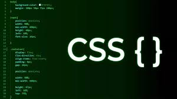

CSS (Cascading Style Sheets) é uma linguagem utilizada para definir a apresentação visual de documentos escritos em HTML ou XML. Em outras palavras, o CSS é responsável por controlar como o conteúdo de uma página web é exibido, desde as cores e fontes até o layout e o espaçamento.
Para que serve o Css?
Definir a aparência: O CSS permite estilizar elementos HTML, alterando cores, fontes, tamanhos, espaçamentos, bordas, etc.
Criar layouts: O CSS é utilizado para organizar os elementos em uma página web, definindo como eles devem ser posicionados e dispostos.
Aplicar animações e transições: Com o CSS, é possível criar efeitos visuais como mudanças de cor, rotações, desaparecimentos, entre outros.
Separar conteúdo e apresentação: O CSS permite separar a estrutura (HTML) da apresentação visual (CSS), facilitando a manutenção e atualização do site.
Exemplos de como o CSS é usado:
Definir a cor de um texto.
Alterar o tipo e tamanho da fonte.
Adicionar um fundo a um elemento.
Criar um layout com duas colunas.
Aplicar um efeito de sombra a um botão.
Em comparação com outras tecnologias da web:
HTML: O HTML é responsável pela estrutura e conteúdo de uma página, enquanto o CSS define como o conteúdo é exibido.
JavaScript: O JavaScript adiciona interatividade e dinamismo a uma página, enquanto o CSS cuida da sua aparência.